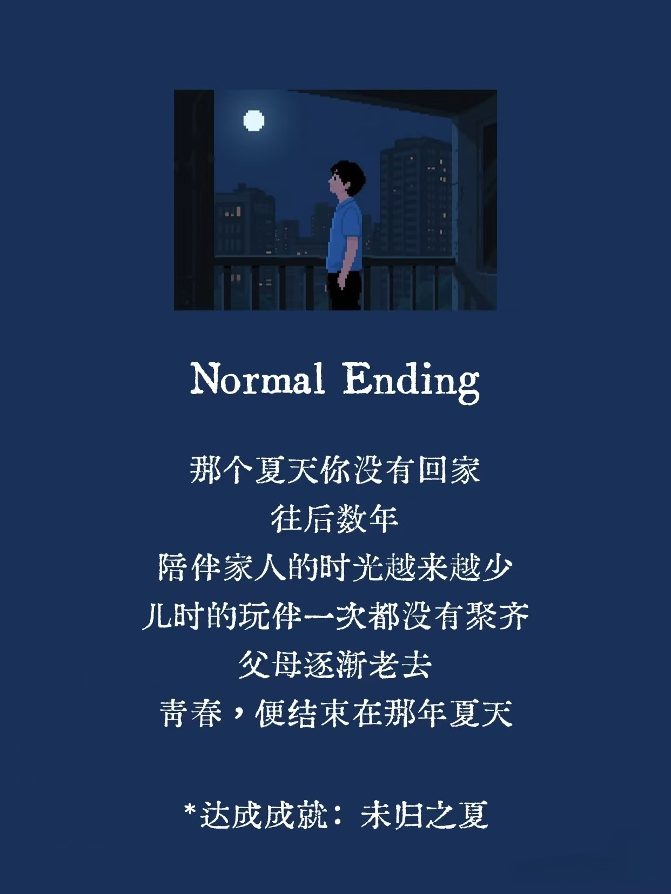
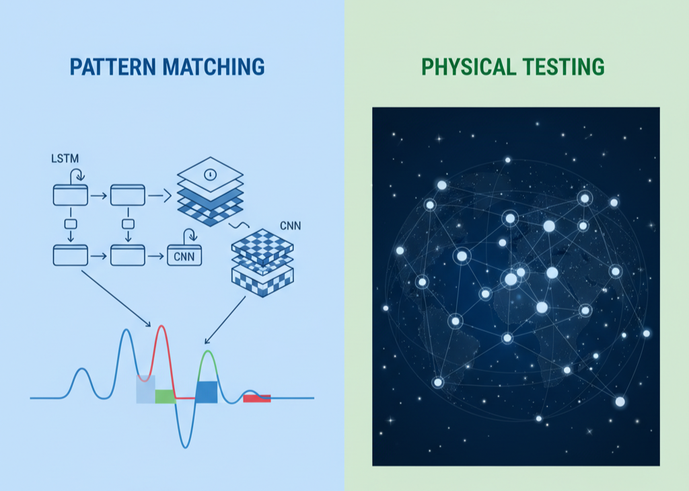
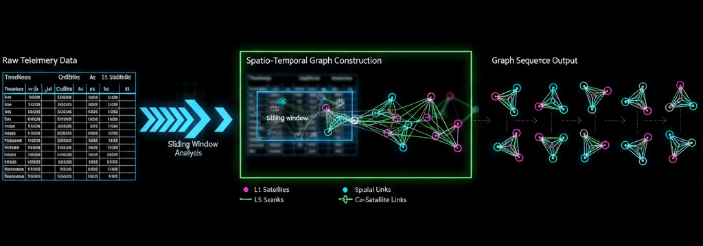
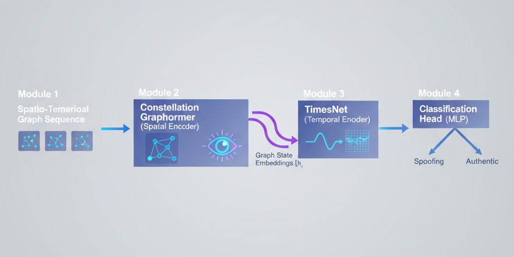
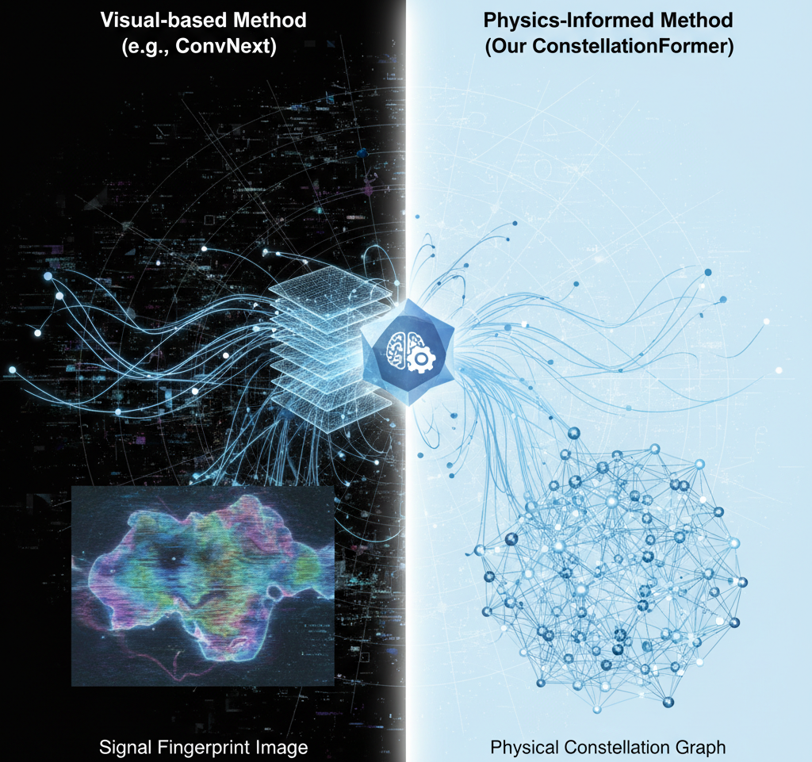

壹 前言
开学未久，国庆将至。
这段日子课程压力较小，BUAA的CS少有的清闲时刻。但是本学期后续的压力令人想想就窒息，抓紧赶路吧🏃。

本篇博客主要作为下一篇论文的构思，这篇论文其实构思许久，笔者难得有个说得过去的奇思，着实让人朝思暮想。为此，特开一个博客记录整体论文的思考框架，希望能借此文章理清思路，也尽可能考虑到一些重要细节，防止后续推翻重来心态爆炸😉。如果您和笔者一样，对GNSS安全、时空数据分析或是前沿的图学习模型感兴趣，那么希望这篇文章能为您带来一些新的思考。
贰 正文
故事的起点
一切源于我们暑期的一项论文研究。在那项工作中，我们发现了一个领域内的“灾难级”现象——我们称之为GNSS欺骗检测的泛化鸿沟。
简单来说，一个在实验室里用设备A的数据训练得近乎完美的深度学习模型，当部署到一台新的、从未见过的消费级设备B上时，其性能可能会一落千丈。我们通过实验证实，这背后的“罪魁祸首”是特征异构性：不同品牌、型号的消费级设备，其内部的硬件和软件差异，导致它们在面对同一种欺骗攻击时，GNSS信号特征（如AGC、C/No）的响应模式——我们称之为“信号指纹”——截然不同。
这让我们被push不得不思考一个关于前景的问题：我们能训练出一个不依赖特定“设备指纹”，能在所有设备上都通用的“万能”检测模型吗？
山重水复疑无路 柳暗花明又一村——从“指纹匹配”到“物理规律检验”
面对这个难题，我们同组的成员的尝试是将问题转化为图像分类，站在CV巨人的肩上，获得了很不错的泛化性能回暖，XGBoost为首的机器学习以及LSTM这些基础的深度学习在泛化测试中F1-Score相比基础性能平均下降0.5左右的性能，而ViT、ConvNeXt等视觉模型通过学习欺骗的”视觉纹理“，能将泛化鸿沟缩小至0.1~0.2的水平。 笔者认为本身这已经是一个很好的实验结果，但是另一个想法在心中愈加强烈，”视觉纹理“是通过小波变换得到的结果，它本身也必然存在泛化问题。因此很难不认为这是一种缓兵之计，它无法从根源上解决这个泛化鸿沟。当然同事的工作也相当卓越且极具参考价值，巨人的肩膀相当坚实，而笔者的思路虽然理论可靠，但实验落地仍是空中楼阁，几乎没有前辈的工作可以做参考，笔者要做的也是从头构建一个全新的模型，而且不计划搬用任何现存的SOTA模型，而是想要通过对项目需求与现有数据的考量进行”私人化定制“。针对泛化鸿沟问题，笔者一共总结出四种解决问题的流派，总结表格如下：
| 流派 | 举例 | 解决问题的思路 | 笔者粗浅的考量 | 论文布局中的价值 |
|---|---|---|---|---|
| 数据派🔢 | Domain Adaptation | 试图通过数据处理，在模型输入前“抹平”设备差异。 | 在严格的LODO场景下，存在灾难性的“数据泄露”风险或因信息不对称而失效。 | 不考虑，杜绝数据泄露带来的弄虚作假。 |
| 模型派🚗 | Mamba/SSM/PatchTST | 试图用更强大的时序建模能力，“看穿”设备指纹。 | 依然是“单通道”处理，无法利用空间信息来检验物理一致性。 | Baseline1，是我们强有力的对手，只在空间信息上略有缺失。 |
| 视觉派👀 | ConvNeXt | 将问题转化为图像分类，学习欺骗的“视觉纹理”。 | 丢失了最关键的空间拓扑信息，且其学习的“视觉指纹”本身也存在泛化问题。 | Baseline2，ViT的上位替代品，代表着我们和CV领域的正面交锋。 |
| 物理派🌏 | ConstellationFormer （姑且为我们的模型起这个名字） |
试图将问题从“模式匹配”提升到“物理规律检验”的维度。 | 正面解决了核心矛盾。不回避、不抹平异构性，而是通过引入一个更高维度的信息（空间物理关系）。 | 我们期望创新的SOTA模型，能够学习到真正通用的、跨越设备差异的判别依据。 |
笔者意识到，沿着老路——即试图用更强大的模型去学习和记忆所有可能的“信号指纹”——可能是一条死胡同。因为新的设备层出不穷，我们永远无法穷尽所有的“指纹”。于是笔者试图转变思路，仔细想想：
是否存在一种独立于设备、共通于所有GNSS接收场景的“特征”？
答案是肯定的——那就是物理规律。
无论消费级设备是什么品牌，它头顶上的那片卫星星座，其运行都遵循着天体力学和电磁波传播的基本定律。而我们关注的“接收转发式”欺骗，其最核心的物理本质，就是用一个“单点源”的错误物理模型，去破坏真实卫星星座“多点源”的空间一致性。
这给了笔者一个巨大的启发：我们的模型，或许不应该再只是扮演一个“指纹鉴定专家”，而应该成为一个“物理学家”。它的任务，不再只是去匹配某个特定的信号波形，而是去检验当前的观测数据，是否与已知的空间物理规律相符。

作为一个导航领域的门外汉，笔者查了一些资料，试图从基于导航原理的角度来剖析“空间一致性”的意义。感兴趣请与笔者一同回归最基础的物理与数学，不感兴趣的读者请直接移步第三小节。
空间一致性的真正含义：一个完美方程组的唯一解：
所有消费级设备都能测量出一个关键数据：伪距
(Pseudorange)，记为
ρ。简单来说，伪距是信号从卫星传播到你这里所花费的时间，再乘以光速。但它不仅仅是几何距离，还包含了一个讨厌的“杂质”——你接收机的时钟与卫星的GPS标准时间之间的钟差
(Clock Bias)，我们记为 dt_user。
对于第i颗卫星而言，这个关系可以写成一个方程： \[
ρ_i = (real\_{dis}) + (c * dt\_{user})
\]
我们把这个方程用三维坐标展开。假设你的未知位置是(x_u, y_u, z_u)，而第
i 颗卫星的已知位置是
(x_si, y_si, z_si)（这个位置信息由卫星广播的星历数据提供）。根据小学二年级学习的勾股定理，真实的几何距离就是：
\[
real\_dis = \sqrt{( (x_{si} - x_u)² + (y_{si} - y_u)² + (z_{si} - z_u)²
)}
\]
于是，对于每一颗卫星，我们都有一个独立的方程。如果设备能同时看到N颗卫星，我们就得到了一个包含N个方程的方程组：
\[
\begin{cases}
ρ_1 = \sqrt{( (x_{s1} - x_u)² + (y_{s1} - y_u)² + (z_{s1} - z_u)² )} + c
* dt\_user\\
ρ_2 = \sqrt{( (x_{s2} - x_u)² + (y_{s2} - y_u)² + (z_{s2} - z_u)² )} + c
* dt\_user\\
...\\
ρ_N = \sqrt{( (x_{sN} - x_u)² + (y_{sN} - y_u)² + (z_{sN} - z_u)² )} + c
* dt\_user\\
\end{cases}
\] 这个方程组有4个未知数：x_u,
y_u, z_u,
dt_user。根据线性代数的基本原理，只要我们有至少4个独立的方程（即N
≥ 4），我们通常就能解出这4个未知数的唯一确定值。
这就是“空间一致性”的数学定义：
存在一个唯一的四维时空点 (x_u, y_u, z_u, dt_user)，能够让上述所有N个方程同时成立。
我们的实验是用的典型的“接收转发式”欺骗设备，和笔者一起回忆一下它的工作流程：
在A点接收：欺骗器在它自己的位置 A = (x_A, y_A, z_A) 接收了所有N颗卫星的真实信号。在A点，这组信号是空间一致的。这意味着存在一个钟差 dt_A，使得对于所有卫星 i，A点测量到的伪距 ρ_A_i 满足： \[ ρ_{Ai} = \sqrt{( (x_{si} - x_A)² + ... )} + c * dt\_A \]
延迟并转发：欺骗器将接收到的物理信号（电磁波）通过一段物理介质（如同轴电缆、电子线路等）。这个过程必然会引入一个时间延迟 d。然后，它将这个被延迟过的信号在你（目标接收机）附近广播出去。
此时我们的消费级设备在B点，收到了这个更强的压制式欺骗信号。对于第 i 颗卫星，你测量到的新伪距 ρ'_i 是多少呢？时间延迟d引入了一个统一的“虚拟距离”，因此公式如下： \[ ρ'_i ≈ ρ_{Ai} + c * d \] 我们的接收机得到的方程组因此变为： \[ \begin{cases} ρ'_1 = \sqrt{( (x_{s1} - x_u)² + (y_{s1} - y_u)² + (z_{s1} - z_u)² )} + c * dt\_user\\ ρ'_2 = \sqrt{( (x_{s2} - x_u)² + (y_{s2} - y_u)² + (z_{s2} - z_u)² )} + c * dt\_user\\ ...\\ ρ'_N = \sqrt{( (x_{sN} - x_u)² + (y_{sN} - y_u)² + (z_{sN} - z_u)² )} + c * dt\_user\\ \end{cases} \] 新的方程组还有解吗？应当是没有了...🧐
你要问为什么？那我们推导一下：
通过简单的数学变化，将ρ全部消掉可以得到下式（以第i颗卫星举例）
\[
\sqrt{( (x_{si} - x_u)² + ... )} = \sqrt{( (x_{si} - x_A)² + ... )} + c
* (dt\_A + d - dt\_user)
\] 这个等式必须对所有的卫星 i = 1, 2, ..., N
都成立。
我们令Δ = c * (dt_A + d - dt_user)。这个 Δ
是一个非零常数，因为它不依赖于具体的卫星 i。
呼之欲出的是一个几何问题的题面： 【是否存在一个点
U = (x_u, y_u, z_u) 和一个常数
Δ ，使得对于太空中所有已知的卫星点
S_i = (x_si, y_si, z_si)
，都满足以下关系？距离(S_i, U) = 距离(S_i, A) + Δ】
先考虑三颗卫星S1, S2, S3：
每一个方程都在三维空间中构成一个独一无二的旋转双曲面，他们的特点是有一个共同的焦点——也是我们欺骗位置所在——A。
除非卫星 S1, S2, S3... 和点 A 处于某种极其特殊、几乎不可能在现实中出现的共线或共面位置，否则这三个（或更多）独立的旋转双曲面是无法交于同一个点的！
因此我们可以得到结论：
“接收转发式”欺骗攻击的数学“指纹”就在于此：它产生了一组在几何上自相矛盾的伪距测量值。接收机的解算器在求解这个方程组时，无论如何“挣扎”（调整 x_u, y_u, z_u, dt_user 的值），都无法让所有方程的残差同时为零。它最终会得出一个巨大的残差，或者干脆无法收敛。这，就是我们通过数学分析，捕捉到的欺骗的铁证。
吁（长舒一口气.jpg
工欲善其事 必先利其器——为什么是“时空异构图”？
一旦确定了“检验物理规律”这个新方向，笔者便开始寻找最合适的建模工具。
”图“(Graph)？为什么是图？
因为我们要检验的核心是“空间一致性”。图，是唯一能够将卫星的观测特征（我们称之为“内容”）与其在天空中的物理拓扑关系（我们称之为“物理承载形式”）相结合的数学语言。没有图，空间规律就无从谈起。
”异构图“(Heterogeneous Graph)？为什么是异构图？
笔者再一次仔细审视了我们实验的数据，发现它远比想象中复杂。我们的观测世界里，天然就存在不同类型的“实体”（如L1频段观测、L5频段观测）和不同类型的“关系”（如卫星间的空间几何关系、同一卫星L1/L5信号的同源关系）。为了最真实、最无损地构建我们GNSS世界的数字孪生模型，采用异构图是对这种复杂现实的尊重和精确描述。这也优雅地解决了数据中L1/L5/单频/双频混杂的“不对齐”问题。当然数据参差不齐是主要原因，我们还有AGC等特征数据在不同设备上也十分参差，笔者不想在最开始被同构图限制住手脚，当然这也会付出更多的开发时间与精力成本，但是总比没有扩展性要好（确信）。
”时空图“(Spatio-Temporal Graph)？为什么是时空图？
欺骗是一个动态过程。仅仅分析瞬时的“空间快照”是不够的。我们需要将这些快照连成一部“时序电影”，才能理解欺骗的注入和演化。因此，我们模型的输入，必须是一个图的时间序列。

铸为双剑倚苍穹 时空编码定乾坤——ConstellationFormer构思问世
有了清晰的目标（检验物理规律）和合适的数据结构（时空异构图），我们便开始着手设计并铸造我们的SOTA模型——一个我们称之为ConstellationFormer的时空异构图网络。这个模型的每一个设计细节，都不是凭空想象，而是由我们试图解决的复杂问题让我们面临的必然选择。Motivation不就有素材了吗(●'◡'●)
顶层设计：“先空间，后时间”的认知架构
笔者认为，一个合理的认知过程是“先看懂单张照片，再看懂整部电影”。因此，我们设计了一个逻辑解耦的架构，来模拟这个过程：
- 空间编码器 (The Spatial Encoder): 它的任务是学习成为一个“瞬间物理学家”，在每一个时刻（每一帧画面），深入分析该时刻卫星星座的“空间结构”是否与观测到的“物理特征”相自洽。
- 时间编码器 (The Temporal Encoder): 它的任务是成为一个“资深影评人”。它接收空间编码器对每一帧画面的“分析报告”（即“状态指纹”向量），然后将这些报告串联起来，分析整部“电影”的时间演化是否合乎逻辑，是否存在异常的剧情转折。
核心引擎：空间编码器 (Constellation Graphormer) 的精巧构造
这是我们整个方案的“心脏”，负责最核心的物理规律检验。它的强大，源于对GNSS世界“数字孪生”的精确模拟。
- 第一层：构建“异构”的宇宙画布
- 为什么是“异构”？ 因为我们自己采集的数据集现实中就是异构的。为了最真实地建模，笔者希望定义了不同类型的节点（Nodes）来代表不同实体，例如 L1观测节点 和 L5观测节点。
- “关系解耦”的边（Edges）:
我们摒弃了为边打上单一“类型”的僵化方法。取而代之，我们用一个多维度的边特征向量来描述任意两个节点间可能同时存在的多种关系，当然这里的多种关系还有待商榷，避免过拟合或者再次产生设备依赖性等问题：
- 空间几何关系: 由卫星间的角距离量化。
- 行为相似性: 由节点特征（如Cn0DbHz）的动态相关性量化。
- 内在关联性: 通过“是否同设备”、“是否同卫星”、“是否同频段”等二进制标志位来描述。
- 差分一致性: 对于“同卫星”的节点对，可以加入了跨设备/跨频段的观测差分作为关键特征。
- 第二层：融合GNN与Transformer的推理引擎
我们相信，欺骗的物理痕迹兼具局部（邻域关系破坏）和全局（全星座协同异常）的双重特性。因此，我们借鉴了前沿的Graph
Transformer思想，让模型同时拥有两种能力：
- GNN的结构先验——学习“局部物理”:
- 模型首先通过类似消息传递的机制，利用我们精心设计的边特征，来理解局部的、基础的物理规则。GNN结构能让模型能够感知到“这两个节点在空间上很近，它们的行为应该相似”或者“这两个节点来自同一颗卫星的L1和L5频段，它们的差分值应该在一个正常范围内”。
- Transformer的全局注意力——进行“全局推理”:
- 在理解了局部规则后，模型启动其核心的全局自注意力机制，开始思考整个宇宙的全局规律。
- 与“接收转发”手法的完美匹配: “接收转发式”欺骗最本质的特征，就是所有被欺骗的卫星都被同一个“中央大脑”（欺骗器）所控制。Transformer的全局注意力，允许天空中任意两个相距遥远的卫星节点直接进行信息交互，正是为了捕捉这种“全局协同异常”而生的。
- 注意力偏置 (Attention Bias): 我们将图中丰富的结构信息（如角距离、边类型），作为一种“偏置”，巧妙地注入到注意力分数的计算中。保证模型在处理全局注意力事项的时候不会忘记物理位置
- GNN的结构先验——学习“局部物理”:
- 第三层：注入“先验知识”——层级感知的注意力
- 最后，为了让模型“站在巨人的肩膀上”，笔者想要将上一篇论文的核心结论——“特征鲁棒性层级体系”——作为一种强先验知识融入模型。
- 我们通过特殊的设计（例如，为处理不同层级特征的注意力头赋予不同权重），来引导模型更信任那些我们已知更可靠的特征（如Tier 1的Cn0DbHz），同时审慎地使用那些可能包含“设备指纹”的特征。
动态分析引擎：时间编码器 (TimesNet) 的画龙点睛
为什么需要SOTA？
空间编码器为我们提供了每一瞬间高质量的“状态指纹”。为了不让后续的时间分析成为性能瓶颈，笔者选用当前时间序列分类领域的SOTA模型——TimesNet。当然还有另一种思路，用大道至简的线性时间模型做时间编码器，从而凸显我们的空间编码器非常之强。但是故事还是强强联手更好讲，双剑合璧，登峰造极嘛。
它带来了什么？
TimesNet擅长将一维时序分解，自动发现其中隐藏的多尺度周期性 (Multi-periodicity)。我们推测，欺骗攻击的动态过程，可能会在“星座状态”的演化中，引入常规模型难以察觉的、异常的周期性模式。TimesNet正是捕捉这种高级动态特征的专家，为我们的模型提供了“画龙点睛”的一笔。
通过以上三个层次的精心设计，我们的ConstellationFormer不是一个像ViT那样的简单“黑箱”模型。小波变换后的图像是否能否摆脱“设备指纹”？这是一个不得而知、也永远无法证明的命题。但是ConstellationFormer是一个被我们数据现实、物理规律和前期研究结论共同雕琢出来的、具有清晰物理内涵的多领域透明系统。笔者认为、并且愿意相信，这种源于深刻理解的设计，将是最终跨越“泛化鸿沟”的关键。

待到秋来九月八 我花开后百花杀——ConstellationFormer给予我们的极高上限与强扩展性
我们清醒地认识到，我们并非唯一的探索者。以ConvNeXt为代表的“视觉派”，通过将信号转换为图像进行分析，在LODO（留一设备）测试中已经取得了约85% F1-score的优异成绩。
然而，我们相信我们的“物理派”路线具有更根本的优势。

- “视觉派”的上限: 他们的方法，本质上还是在匹配一种“泛化能力有限的视觉指纹”，并且完全丢弃了我们认为最宝贵的空间拓扑信息。85%的成绩，可能已经接近其范式的天花板。
- 我们的潜力: 我们的ConstellationFormer，通过在一个更高维度的、物理意义丰富的时空图上进行推理，有望发现那些被“视觉派”忽略的、决定性的物理不自洽证据（例如，我们通过初步分析发现的“多普勒时空错配”现象）。
- 数据集上的扩展性：我们的ConstellationFormer在动态或者有遮蔽的场景下的性能会更加优越，核心还是物理规律是独立于信号特征之外的，这是我们亘古不变的根基。
笔者的构思并非在追求一个“更好”的图像分类器，而是在探索一个全新的、可能更根本的解题范式。笔者的目标，是将LODO测试的性能天花板，从85%提升到90%甚至95%以上。
叁 结语与邀请
这条探索之路无疑充满挑战——数据的不完美、模型的复杂性、实验的繁琐。但笔者相信，由问题本质驱动的、有清晰物理直觉指引的研究，是最有可能取得突破的。
笔者在这里分享出尚在探索中的构思，既是作为团队的蓝图，也希望能抛砖引玉，与同样对这个问题感兴趣的朋友们交流、碰撞思想。如果您有任何建议或想法，我们都非常期待听到您的声音！
感谢您的阅读。
我总是惊讶地发现，我不假思索地上路，因为出发的感觉太好了。世界突然充满了可能性。
—— 凯鲁亚克 《在路上》
If you like this blog or find it useful for you, you are welcome to comment on it. You are also welcome to share this blog, so that more people can participate in it. If the images used in the blog infringe your copyright, please contact the author to delete them. Thank you !